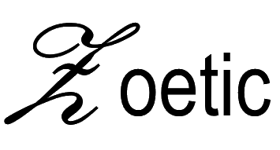

☰ Contents |
 |
|---|
Further Discussion
- The most important step in creating a good result is deciding on the two alignment points. The first point is the actual alignment location and is the area that will be most “in focus” in the resulting video. The second point is used to calculate the scaling, translation and rotation factors, relative to the first point, required to align the images. This means the actual composition of the second point is not important (it could be the corner of an inconsequential doorpost) but it must be accurately locatable in all images.
- The series is aligned to the first image (i.e. the target) in the series. (The Pro version allows any image to be selected as the target image.) Therefore, the first image should be a good example of the series and at the orientation and scale required of the video to be generated.
- It is not necessary to mark all the images before a video is created though only the marked images will be used.
- Additional images can be added to a project at any time.
- As well as using external apps to import images into Zoetic (as per step 1), images can be imported directly into a project using Zoetic’s Add images However, you are likely to find greater flexibility using external apps. It is therefore advisable to share from images apps to Zoetic, rather than Zoetic “pulling” images from external apps.
- Images are sorted, by default, in chronological order from oldest to newest. If an undated image is added to the project it will be added to the start (or end) of the series. The image will then need to be manually moved to its correct location. The series is only automatically sorted once, which is when the images are first added to the project. Any manual re-ordering after that point will be maintained. Alternatively, use the Sort function to add dates to any undated images.